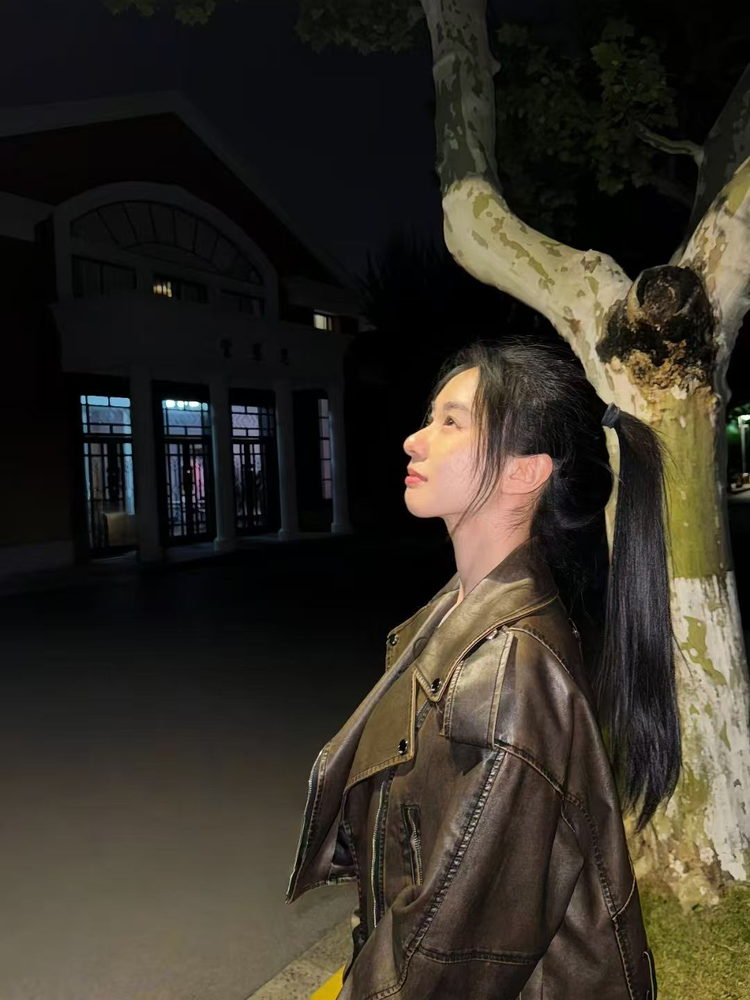

LLM Applications & RAG
Exploring how retrieval and generation work together to provide grounded, task-relevant context for language models.
LLM APPLICATIONS · RAG
ECNU · COMPUTER SCIENCE
Computer Science / Undergraduate at ECNU
Exploring intelligent systems.
Building practical applications.
My interests span LLM applications, RAG, and agent systems—from understanding data and algorithms to building useful software.

01 / ABOUT
I am Chuhan Wang, an undergraduate in Computer Science and Technology at East China Normal University.
I am interested in bringing large language models into practical applications, particularly retrieval-augmented generation (RAG), agent workflows, and iterative improvement of agent skills. I aim to combine algorithmic understanding with software engineering to build reliable, usable systems.
My coursework and practice involve Python, C++, TypeScript / JavaScript, FastAPI, Flask, and D3.js. Through mathematical modeling, I also explore how to reason from incomplete observations and compare alternative decision rules.
02 / EXPLORING
Areas I am studying and exploring,
and questions I want to pursue further.
Exploring how retrieval and generation work together to provide grounded, task-relevant context for language models.
LLM APPLICATIONS · RAG
Studying frameworks such as LangChain and LangGraph, with an interest in agent workflows and iterative skill improvement.
AGENT WORKFLOWS · SKILLS
Connecting data preparation and model assumptions with API development and practical software applications.
PYTHON · MODELING · FASTAPI
03 / GITHUB
04 / BACKGROUND
SEP 2024 — JUN 2028 (EXPECTED)
School of Computer Science and Technology · Undergraduate program
Coursework includes Data Structures, Algorithm Analysis, Artificial Intelligence, Database Systems, Data Mining, Deep Learning, and Data Visualization.
2025 — 2026
School of Computer Science and Technology, ECNU
Helped organize student union events including graduation celebrations, singing competitions, and sports activities, developing experience in communication, teamwork, and event coordination.
Python · C++ · TypeScript / JavaScript
FastAPI · Flask · D3.js
Git · Linux · Docker
05 / RECOGNITION
Mathematical Contest in ModelingMeritorious Winner
Challenge Cup · National College Student Academic Science and Technology CompetitionNational Grand Prize
Third-tier Scholarship